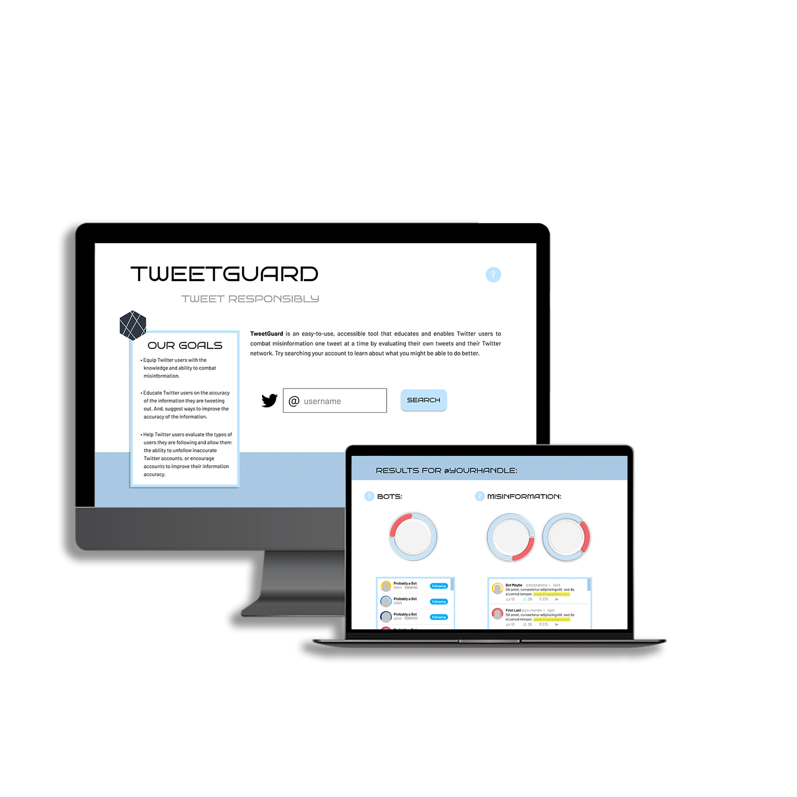

The Goal
Build an easy-to-use, accessible tool that enables every day Twitter
users to combat misinformation by evaluating their own tweets and
Twitter network.
The Team
- Yasmin Alameddine - Researcher and copywriter
- Siqi Ji - Backend tech developer and researcher
- Jorge Bello - Backend tech developer and researcher
- Heidi He - Backend tech developer and researcher
- Myself - UX/UI designer and project manager
Research
Misinformation
-
→ False or inaccurate information; that which intends to deceive.
- → Has been around since the 1500s
- → Has been catalyzed by social media
- → Can be a threat to safety and democracy
Twitter
- → Allows for the fast spread of misinformation
- → Weak policies regarding misinformation
- → 145 million daily active users
Specific Goals and Intended Outcomes
Equip users with knowledge to combat misinformation
-
→ Decreases a user’s reliance on Twitter’s policies and actions
- → Increases the user’s personal responsibility
Educate users on the accuracy of their own Tweets
-
→ Decreases the creation and spread of misinformation on Twitter
Assist users in evaluating their own Twitter network
-
→ Decreases number of bad bots/untrustworthy accounts followed
Final Design
Still Frames

Interactive Prototype
Video Presentation